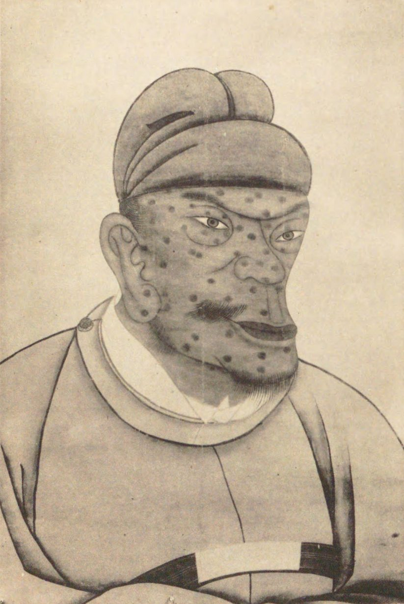
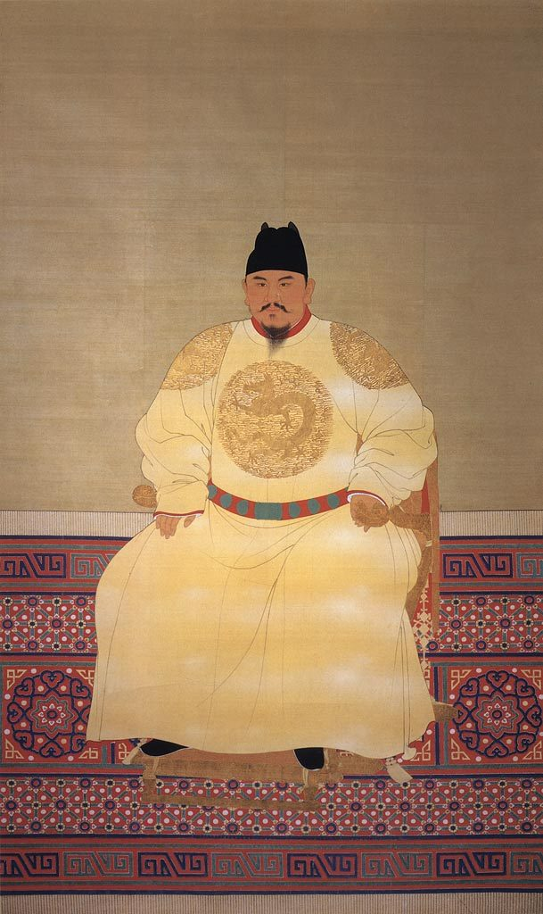
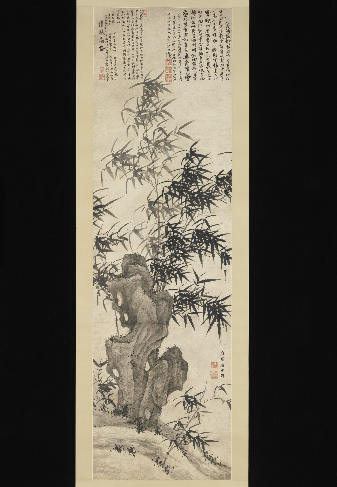

Hongwu
“The harsher the punishment, the more the violations. Day and night I cannot rest.”
Proclamations of the Hongwu Emperor, CC p. 207. November 17 reader, PDF p. 10


Both portraits depict Zhu Yuanzhang, who founded the Ming dynasty in 1368. In the court portrait, his robe and throne identify him as emperor. In the other, his cheekbones and jaw project beyond the line of his brow. The National Palace Museum explains that people who read faces for signs of destiny could see features like these as marks of a future ruler. National Palace Museum · Image sources
Hongwu describes punishing officials who have abused their authority. In the Analects, Ji Kangzi asks Kongzi (Confucius) whether executing wrongdoers would help him govern.
“The harsher the punishment, the more the violations. Day and night I cannot rest.”
Proclamations of the Hongwu Emperor, CC p. 207. November 17 reader, PDF p. 10
“If you desire goodness, then the common people will be good. The Virtue of a gentleman is like the wind, and the Virtue of a petty person is like the grass — when the wind moves over the grass, the grass is sure to bend.”
Analects 12.19, trans. Edward Slingerland, p. 36. September 22 reader, passage 12.19
Hongwu says officials repeat the same crime by evening, yet he fears that lighter penalties would leave ordinary people at their mercy. Kongzi puts the ruler himself under scrutiny. If people take their lead from him, his own conduct determines what they learn.
One Hundred Words of Praise (Bǎizì zàn) is a Chinese poem attributed to Hongwu. Brendan Newlon translates it as follows.
The universe began with the heavenly tablet recording his name. The religion-delivering great sage, born in the western realm.
Conferring and receiving heavenly scripture in thirty parts, universally transforming all created beings. Master of the trillion rulers, leader of the ten thousand sages.
Assisted by destiny, protector of the community. In each of the five prayers, he silently supplicates for their total well-being. His intention is that Allah should remember the needy. Deliver them from tribulations to safety, Knower of the unseen.
Exalted above every soul and spirit, free from any blameworthy deeds. A mercy to all of the worlds, whose path is preeminent for all time.
Renounce spiritual ignorance; return to The One – that is the religion called Islam.
Muhammad is the most noble sage.
One Hundred Words of Praise, translated by Brendan Newlon, © 2016. November 17 reader, PDF p. 11
The final two characters are 聖人 (shèngrén), “sage.” By the time the poem gives Muhammad this title, it has described what he does for others. He prays for the community’s well-being and asks Allah to remember those in need. PDF p. 11
Open the four Ming slides · The Forbidden City, the Temple of Heaven, the Great Wall, and the Ming tombs.
Eight steps to the DATONG
investigating things → extending knowledge → making the will sincere → rectifying the mind → cultivating the person → regulating the family → governing the state → bringing world peace
In Instructions for the Inner Quarters, Xu connects a woman’s conduct to the fortunes of her family and the state. She tells women they can become sages by following the example of the ancients, then quotes Ode 218. SCT pp. 835–836 · reader pp. 6–7
高山仰止、景行行止。
“The high mountain is to be looked up to. The great road is easy to be traveled on.”
Ode 218, quoted by Empress Xu in Instructions for the Inner Quarters, SCT p. 836. November 17 reader, PDF p. 7

Windblown bamboo, ca. 1460. Ink on paper.
Xia Chang was a court official and a painter. He used the strokes of seal script for the upright stalks and cursive script for the fine twigs.
The Metropolitan Museum of Art, 1989.235.1The questions are on printed p. 227. The answers cite examples from the assigned chapter, pp. 227–246.
Early in the fifteenth century, the Ming court could send a much larger expedition to sea than Columbus or Vasco da Gama would command later in the century. Zheng He’s first fleet left in 1405 with 317 ships. It followed routes merchants already used. The court wanted foreign rulers to send envoys, and Zheng He offered their representatives passage to China. Among the things his fleets brought home were African giraffes and Indian cotton. pp. 232–233
By the sixteenth century, Chinese and European merchants were buying from one another. Portuguese traders established a base at Macao in 1557. Silver from Mexico and Peru crossed the Pacific through Manila to pay for Chinese silk and porcelain. p. 234
Ebrey and Walthall give us a comparison of ships. They leave the comparison of living standards open. After the last voyage, Zheng He’s fleet sat in harbor. Officials had objected to the expense, the emperor who backed the voyages had died, and his successors faced a renewed Mongol threat. In 1474 the remaining ships with three or more masts were taken apart for lumber. pp. 232–233
For a household, the evidence would have to tell us what people could earn and what it cost to live. The authors describe tenant farmers, absentee landowners and wealthy lower Yangzi cities. By 1600 China had more towns, larger cities and more books in circulation. The chapter offers no equivalent European evidence for comparing households or measuring which society was changing faster. pp. 227, 246
Yes. A rule made at court could determine which family in a village had to collect the grain and haul it away. The first Ming emperor grew up fearing tax collectors. To protect villagers, he made better-off local families assess, collect and deliver taxes without pay. The burden could ruin households. Later reforms converted most of those obligations into payments of money. p. 240
Trade connected households across even greater distances. In 1639 Japan barred traders from Macao from entering Nagasaki. Soon afterward, trade between Chinese merchants and the Spanish in the Philippines stopped. Less silver reached China. Ebrey and Walthall trace part of the unrest over rents in the lower Yangzi to the resulting fall in prices, which made rents harder to pay. p. 245
Yes. The same water routes that brought regions into closer contact also made it profitable for them to grow or make different things. Farmers in coastal Fujian raised sugar cane and tobacco. Producers in the lower Yangzi delta concentrated on cotton and silk. At Jingdezhen, potters could sell porcelain far beyond the households that lived near their kilns. p. 240
Families organized differently, too. In Huizhou, merchants’ wealth helped sustain groups of relatives who traced descent from a common ancestor. Ebrey calls these groups lineages. Some owned land together and paid for a school or an ancestral temple. Lineages were more common in southern China than in the north. pp. 227, 240
The Ming founder restored order after the Yuan collapse. He also concentrated decisions so tightly at court that much depended on one man. In 1380 Zhu Yuanzhang eliminated the chancellor’s post and took reports directly from the heads of ministries. Two centuries later the Wanli emperor refused to hold court for years at a time. Officials’ reports piled up unopened and government posts stayed vacant. pp. 227, 229–230
On the coast, the government did change course. It first tried to deprive pirates of supplies by forcing residents to move inland. Ebrey and Walthall report that efforts against piracy began to work better when officials eased restrictions on maritime trade. p. 234
A degree gave a family status. Office also gave a scholar a duty to speak when he thought the emperor was wrong. Even the lowest degree excused a man from compulsory labor. His relatives might pay for his schooling because the whole family gained standing if he passed. The highest degree qualified him for an appointment. Competition eventually surpassed the levels of the Song dynasty. pp. 227, 234–236
In 1519 more than a hundred officials knelt outside the palace to oppose Emperor Wuzong’s proposed tour of the southern provinces. He made them kneel for three days and then had them flogged. Eleven died. The Confucian tradition honored officials who took that risk. Others chose local posts where they could still do useful work, or retired if they could afford to. p. 231
In 1376 the Hongwu emperor invited criticism. Ye Boju answered that officials were being punished too severely for small mistakes. The emperor had him brought to the capital in chains. Ye died of starvation in prison. p. 231
Exams trained candidates across China to read the same classics and write the same kind of essay. Print gave readers a much wider choice. Provincial quotas gave men outside the wealthy lower Yangzi a better chance to compete. Only about 2–4 percent of candidates passed the provincial exam. For many educated men, repeated attempts at that exam occupied much of their lives. pp. 234–236
Consider two kinds of reading. A candidate learned the Four Books with Zhu Xi’s interpretations. A reader of Journey to the West followed the Tang monk Xuanzang to India in the company of a supernatural monkey and a pig. Publishers competed for buyers of novels by adding pictures or commentary. Stories and plays written in everyday language also reached people with little classical schooling. pp. 227, 234, 242–244